Gated PixelCNN: Two Causal Streams
Abstract
A vertical stream can carry information that a plain masked convolutional stack cannot reach. A horizontal stream combines that information with earlier pixels on the current row. This compact native Gated PixelCNN uses three width-four blocks with paired tanh/sigmoid gates, then a Bernoulli head. Both an image-only model and a class-conditioned model are fitted on the same binary8x8 MNIST protocol. Worked masks and gates precede the real data. The complete program shows all192 Adam writes and every raster-sampling step. Fixed-final test losses are.58265 and.57816 bits per binary pixel, both worse than the fit-only Bernoulli baseline's.38445. Full causal Jacobians, an opened blind spot and shared-noise class controls establish the model's dependency protocol, not realistic generation or superior likelihood.
Keep vertical and horizontal information separate
[van den Oord et al., Conditional Image Generation with PixelCNN Decoders (2016)](https://arxiv.org/abs/1606.05328) combines gated convolutional layers with conditioning information. This teaching variant uses three small dual-stream blocks, one gray binary channel and ten possible digit classes. It is trained from scratch, without pretrained weights, normalization, dropout or pooling.
The vertical stream at row r sees only raw rows above r. Its first3x3 mask allows the top kernel row; later vertical masks allow the top and current feature rows. This is safe because the current vertical feature row already excludes the current raw row. A1x3 horizontal stream sees earlier sites in the current row, plus a1x1 projection from the gated vertical stream. The first horizontal mask allows only the left kernel cell; later masks also allow the center causal hidden feature. Thus every output remains independent of its current and future raw pixels, while vertical links can fill the ordinary masked-CNN blind spot.
#include <dm/dm.hpp>
int main(){
std::filesystem::create_directories("build");
dm::graphics::Diagram d(64,1800);dm::graphics::DiagramNodeStyle s;
s.width=9;s.height=4.5;s.font_size=34;
d.node("x",{-24,0},"Image canvas\nStrict raster past",s)
.node("v0",{-10,6},"Vertical block 0\nTop raw row only",s)
.node("v1",{4,6},"Vertical block 1\nCausal feature rows",s)
.node("v2",{18,6},"Vertical block 2\nCausal feature rows",s)
.node("h0",{-10,-6},"Horizontal block 0\nLeft raw site only",s)
.node("h1",{4,-6},"Horizontal block 1\nLeft + center, residual",s)
.node("h2",{18,-6},"Horizontal block 2\nLeft + center, residual",s)
.node("out",{32,-6},"1x1 binary head\nNext-pixel logit",s)
.edge("x","v0").edge("x","h0")
.edge("v0","v1").edge("v1","v2")
.edge("h0","h1").edge("h1","h2")
.edge("v0","h0").edge("v1","h1").edge("v2","h2").edge("h2","out")
.save_svg("build/gpc_method.svg");
}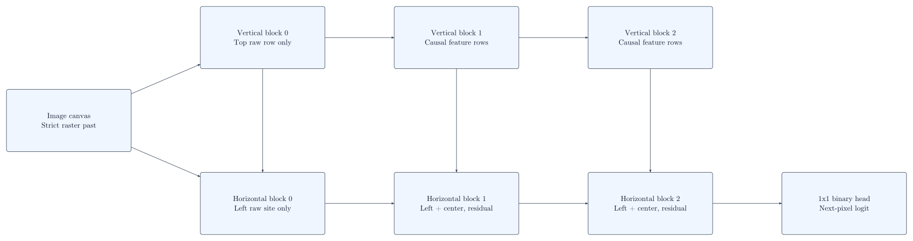
Hand-check four structural masks
The top two panels below show vertical first/later masks; the bottom panels show horizontal first/later masks. Gray cells outside the central horizontal row are unused drawing space: the actual horizontal kernels have height1. All mask channels repeat the same spatial structure. The first masks exclude the whole current raw pixel, including all channels in a future RGB context.
For binary input, block0 has48 forbidden vertical weights and16 forbidden horizontal weights. Each later width4 block has96 forbidden vertical and32 forbidden horizontal coordinates. The total is320. They remain stored but are multiplied by stopped structural zeros inside the graph, so their partials are exactly zero. The source's unconditional model has1073 values in23 leaves; six learned10x8 class tables add480 values and6 leaves, giving1553/29.
#include <dm/dm.hpp>
int main(){
namespace n=dm::nn;namespace m=n::models;std::vector<n::Tensor> panels;
for(bool vertical:{true,false})for(bool first:{true,false}){
auto mask=m::GatedPixelMask(1,vertical,first,1);
if(!vertical)mask=n::concat({n::full({1,3,1,1},.5),mask,n::full({1,3,1,1},.5)},0);
panels.push_back(n::image_grid(n::reshape(mask,{9,1,1,1}),3,3,.5,40));
}
n::save_image_grid(n::stack(panels),"build/gpc_masks.png",2,0,1,10,.5,1);
std::print("Binary source: block0 masked48+16; later blocks2*(96+32); total320.\n");
}Binary source: block0 masked48+16; later blocks2*(96+32); total320.
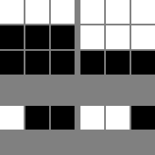
Derive the paired gate and the class offset
Split each eight-channel preactivation into four filter logits a and four gate logits b. The elementwise output and partials are
At a=1,b=0 the output is about.380797, the filter partial.209987 and gate partial.190399. Changing b controls the feature amplitude; changing a controls its signed content. Class conditioning adds one row of a learned10x8 table to each stream's preactivation before this split. Those eight learned offsets can therefore change both feature content and gate strength. Labels are discrete metadata; their table entries and image paths remain differentiable.
#include <dm/dm.hpp>
int main(){
namespace n=dm::nn;auto t=n::DType::Float64;
auto a=n::reshape(n::arange(-4,5,1,t),{1,1,9,1});
auto plot=dm::graphics::RPlot::create();
const std::vector<dm::graphics::RGB> colours{{37,99,235},{22,163,74},{220,38,38}};
int k=0;
for(double b:{-2.,0.,2.}){
auto pre=n::concat({n::broadcast_to(a,{1,1,9,4}),n::full({1,1,9,4},b,t)},3);
auto y=n::models::GatedPixelGate(pre);
plot.lines(a.to_vector<double>(),n::slice_axis(y,3,0,1).to_vector<double>(),std::string("Gate logit ")+std::to_string(int(b)),colours[k++]);
}
plot.y_limits(-1.05,1.4).x_label("Supplied tanh-filter logit").y_label("Gated feature")
.title("The sigmoid half controls the signed feature amplitude").save_svg("build/gpc_gate_toy.svg");
auto x=n::tensor({1.,1.,1.,1.,0.,0.,0.,0.},{1,1,1,8},t).requires_grad_();
auto y=n::models::GatedPixelGate(x);
auto g=n::grad(n::sum(n::slice_axis(y,3,0,1)),{x})[0];
std::print("At a=1,b=0: output={:.6f}; filter partial={:.6f}; gate partial={:.6f}.\n",y.to_vector<double>()[0],g.to_vector<double>()[0],g.to_vector<double>()[4]);
}At a=1,b=0: output=0.380797; filter partial=0.209987; gate partial=0.190399.
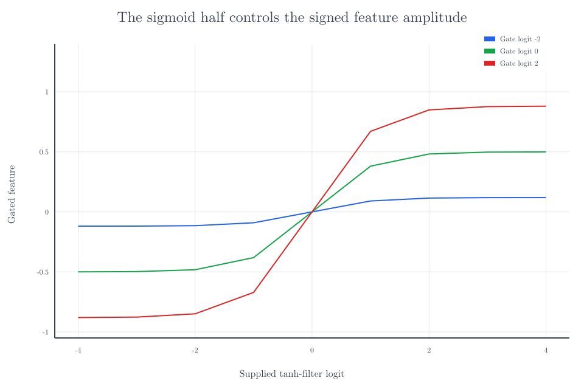
Trace the actual conditional network
Each block computes a vertical gate, an unbiased vertical4→horizontal8 link, a horizontal gate and a biased1x1 projection4→4. Blocks1 and2 add the prior horizontal map as a residual. The final biased1x1 layer4→1 emits a Bernoulli logit. Missing kernels/tables use normal(0,.1) initialization, biases zero. There are no learned vertical-to-horizontal biases. The native API also accepts an RGB3-channel input and30-channel context head for PixelCNN++, while its within-pixel RGB likelihood remains a separate operation.
The executed trace below packs64 image coordinates and one supplied digit label into65 coordinates solely for the plotting interface. It unpacks the label as Int64 before the model call. Its two streams and supplied class are explicit; no class is inferred from the image.
#include <dm/dm.hpp>
int main(){
namespace n=dm::nn;n::ParameterStore p(8501);
n::Module model([&](const n::Tensor& packed){
auto x=n::reshape(n::slice_axis(packed,1,0,64),{1,8,8,1});
auto label=n::cast(n::reshape(n::slice_axis(packed,1,64,65),{1}),n::DType::Int64);
n::model_stage("Supplied binary canvas",packed,x);n::model_stage("Supplied digit class",packed,label);
auto o=n::models::GatedPixelCnn(p,x,label,true);
n::model_stage("Block0 vertical gate",std::vector<n::Tensor>{x,label},o.vertical0);
n::model_stage("Block0 horizontal",std::vector<n::Tensor>{x,label,o.vertical0},o.horizontal0);
n::model_stage("Block1 vertical gate",std::vector<n::Tensor>{o.vertical0,label},o.vertical1);
n::model_stage("Block1 horizontal residual",std::vector<n::Tensor>{o.horizontal0,label,o.vertical1},o.horizontal1);
n::model_stage("Block2 vertical gate",std::vector<n::Tensor>{o.vertical1,label},o.vertical);
n::model_stage("Block2 horizontal residual",std::vector<n::Tensor>{o.horizontal1,label,o.vertical},o.horizontal);
return n::model_stage("1x1 binary logits",o.horizontal,o.logits);
},"Conditional dual-stream PixelCNN:1553 stored values");
n::ModelPlotOptions options;options.detail=n::ModelPlotDetail::Blocks;
options.sizing.minimum_extent=2;options.sizing.max_planes=4;
auto fig=model.plot(n::zeros({1,65}),options);
if(fig.parameter_count()!=1553||p.size()!=29)throw std::runtime_error("Conditional census");
fig.save_svg("build/gpc_network.svg");
}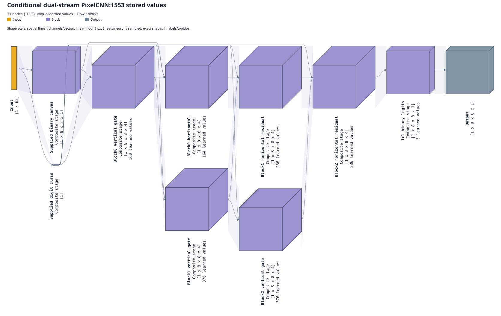
Fit both source variants with visible gradients and optimizer writes
The density factorization is the same as plain PixelCNN: p(x|c)=product_j Bernoulli(x_j;sigmoid(z_j(x_<j,c))). Unconditional mode validates the supplied labels but ignores them. In conditional mode the same observed class c enters all six tables. The teacher-forced objective is
Both variants use the canonical native MNIST saliency pools:1000 fit,200 validation and200 disjoint official-test rows, with labels, source IDs and a provenance manifest. BinaryPixels performs Double half-pixel28→8 bilinear arithmetic, casts once to Float32 and thresholds gray>=.5. These are deterministic binary targets. The experiment's unit is a binary8x8 pixel, not an original gray28x28 pixel. Divide NLL in nats by log(2) for bits per binary pixel.
The source has no TensorFlow initialization records at its optional reference path; its auto default therefore uses native store seed8501. Each model gets an independent store and cold Adam(.003), betas(.9,.999),epsilon1e−8, no weight decay. BatchOrder seed8513 and batch size32 yield31 full batches and one8-row batch in each of three epochs. There are96 writes per variant,192 total. The fixed final epoch3 is selected before viewing held-out losses. The complete program saves every partial, write and optimizer counter, and checks that all320 masked coordinates stay bit identical at every step.
Sampling remains a visible caller loop. A complete midpoint-MT Double[N,64] bank is drawn in row/ordinal order even for prefix completion. At site j, evaluate the current canvas, retain p_j and write [u_j<p_j]. Only the first32 truth sites enter a completion canvas; future truth is never fed. Class-grid controls first draw the complete40-row bank, then reuse its first four rows across all ten class groups. No hidden model method performs fitting or sampling.
#include <dm/dm.hpp>
namespace n=dm::nn;namespace m=n::models;
using T=n::Tensor;using A=std::map<std::string,T>;namespace fs=std::filesystem;
void Save(const fs::path& file,const A& fields){
n::NamedTensors named;for(const auto& [key,value]:fields)named.emplace_back(key,value);
n::save_npz(file.string(),named);
}
A Weights(const n::ParameterStore& p){
A out;for(const auto& name:p.names())out.emplace(name,p.at(name).detach().clone());return out;
}
bool Equal(const A& a,const A& b){
if(a.size()!=b.size())return false;
for(const auto& [key,value]:a)if(!b.count(key)||!n::equal_bits(value,b.at(key)))return false;
return true;
}
A Partials(const n::ParameterStore& p,const std::vector<T>& g){
A out;for(std::size_t k=0;k<g.size();++k)out.emplace(p.names()[k],g[k].detach());return out;
}
A Evaluate(n::ParameterStore& p,const T& x,const T& labels,bool conditional){
n::NoGradGuard guard;auto o=m::GatedPixelCnn(p,x,labels,conditional);auto l=m::BernoulliPixels(o.logits,x);
return {{"logits",o.logits},{"vertical",o.vertical},{"horizontal",o.horizontal},
{"probability",l.probability},{"per_image_nll",l.per_image_nll},{"loss",l.loss}};
}
A Sample(n::ParameterStore& p,int count,std::uint32_t seed,const T& labels,bool conditional,const T& prefix={},int prefix_size=0,bool common_four=false){
n::NoGradGuard guard;
auto ordinal=n::reshape(n::arange(0,64),{1,64});
T canvas=n::zeros({count,64}),conditionals=n::zeros({count,64});
auto bank=m::BinaryPixelUniforms(count,seed);
if(common_four){
std::vector<std::int64_t> shared;for(int row=0;row<count;++row)shared.push_back(row%4);
bank=n::take_rows(bank,shared);
}
if(prefix_size)canvas=n::where(n::less(ordinal,prefix_size),n::reshape(prefix,{count,64}),canvas);
for(int site=prefix_size;site<64;++site){
auto logits=m::GatedPixelCnn(p,n::reshape(canvas,{count,8,8,1}),labels,conditional).logits;
auto q=n::slice_axis(n::reshape(n::sigmoid(logits),{count,64}),1,site,site+1);
auto u=n::slice_axis(bank,1,site,site+1);
auto bit=n::cast(n::less(u,n::cast(q,n::DType::Float64)),n::DType::Float32);
auto at_site=n::equal(ordinal,site);
conditionals=n::where(at_site,q,conditionals);
canvas=n::where(at_site,bit,canvas);
}
return {{"images",n::reshape(canvas,{count,8,8,1})},{"uniform",bank},{"conditionals",conditionals}};
}
T Classes(int count,bool grouped=false){
std::vector<std::int32_t> labels;for(int i=0;i<count;++i)labels.push_back(grouped?i/4:i%10);
return n::from_vector(labels,{count});
}
int main(){
for(bool conditional:{false,true}){
const fs::path root=fs::path("build/gated_pixel_cnn")/(conditional?"conditional":"unconditional");
fs::create_directories(root/"phases");
n::set_num_threads(4);
const fs::path data_root=dm::datasets::prepare_example_data("mnist-assets");
const auto pools=m::LoadSaliency(data_root/"saliency");
std::vector<T> binary;A data;
const std::vector<std::string> split{"fit","validation","test"};
for(int k=0;k<3;++k){
auto prep=m::BinaryPixels(pools[k].images);binary.push_back(prep.images);
data[split[k]+"_original"]=pools[k].images;data[split[k]+"_gray"]=prep.gray;
data[split[k]+"_images"]=prep.images;data[split[k]+"_labels"]=pools[k].labels;
data[split[k]+"_source_ids"]=pools[k].source;
}
Save(root/"data.npz",data);
n::ParameterStore p(8501);
{n::NoGradGuard guard;m::GatedPixelCnn(p,n::zeros({1,8,8,1}),Classes(1),conditional);}
const auto initial=Weights(p);Save(root/"initial_arrays.npz",initial);
Save(root/"initial_outputs.npz",Evaluate(p,binary[2],pools[2].labels,conditional));
n::OptimizerConfig config;config.kind=n::OptimizerKind::Adam;
n::Optimizer optimizer(p,.003,config);
n::BatchOrder order(1000,32,8513);std::vector<std::int64_t> rows;
std::ofstream batches(root/"batches.tsv"),history(root/"history.tsv");history.precision(17);
batches<<"epoch\tstep\trow\tsource_id\n";
history<<"epoch\tvalidation_nll_per_binary_pixel\tvalidation_bits_per_binary_pixel\n";
auto source=pools[0].source.to_vector<std::int32_t>();
std::vector<double> val_bits;T first,first_labels;int updates=0;
for(int epoch=1;epoch<=3;++epoch){
order.begin_epoch();
for(;;){
rows=order.next();if(rows.empty())break;
const auto x=n::take_rows(binary[0],rows),c=n::take_rows(pools[0].labels,rows);
if(!updates){first=x;first_labels=c;Save(root/"first_batch.npz",{{"images",x},{"labels",c}});
Save(root/"first_forward.npz",Evaluate(p,x,c,conditional));}
auto output=m::GatedPixelCnn(p,x,c,conditional);auto objective=m::BernoulliPixels(output.logits,x);
auto gradients=n::grad(objective.loss,p.parameters());
const auto phase=root/"phases"/("batch"+std::to_string(updates));
Save(phase.string()+"-gradient.npz",Partials(p,gradients));
if(!updates)Save(root/"initial_gradients.npz",Partials(p,gradients));
optimizer.step(gradients);
const auto after=Weights(p);Save(phase.string()+"-after.npz",after);
Save(phase.string()+"-iterations.npz",{{"iterations",n::from_vector(std::vector<std::int64_t>{optimizer.iterations()},{1})}});
if(!updates)Save(root/"first_after.npz",after);
for(const auto& [key,value]:initial){
bool vertical=key.find("/vertical/")!=std::string::npos;
bool horizontal=key.find("/horizontal/")!=std::string::npos;
if(!key.ends_with("/W")||!(vertical||horizontal))continue;
auto mask=m::GatedPixelMask(key.starts_with("block0/")?1:4,vertical,key.starts_with("block0/"));
auto forbidden=n::equal(mask,0);
if(!n::equal_bits(n::where(forbidden,value,n::zeros_like(value)),
n::where(forbidden,after.at(key),n::zeros_like(value))) ||
n::max(n::abs(n::where(forbidden,Partials(p,gradients).at(key),n::zeros_like(value)))).item()!=0)
throw std::runtime_error("Masked coordinates changed");
}
for(auto row:rows)batches<<epoch<<'\t'<<updates<<'\t'<<row<<'\t'<<source[row]<<'\n';
++updates;
}
const double nll=Evaluate(p,binary[1],pools[1].labels,conditional).at("loss").item();
history<<epoch<<'\t'<<nll<<'\t'<<nll/std::log(2.)<<'\n';val_bits.push_back(nll/std::log(2.));
Save(root/("epoch"+std::to_string(epoch)+"_arrays.npz"),Weights(p));
Save(root/("epoch"+std::to_string(epoch)+"_samples.npz"),Sample(p,16,8521,Classes(16),conditional));
}
if(updates!=96 || optimizer.iterations()!=96)throw std::runtime_error("96 Adam updates");
p.save((root/"final.npz").string());
Save(root/"final_gradients.npz",Partials(p,n::grad(m::BernoulliPixels(m::GatedPixelCnn(p,first,first_labels,conditional).logits,first).loss,p.parameters())));
n::ParameterStore restored(8501);
{n::NoGradGuard guard;m::GatedPixelCnn(restored,n::zeros({1,8,8,1}),Classes(1),conditional);}
restored.load((root/"final.npz").string(),true);
if(!Equal(Weights(p),Weights(restored)))throw std::runtime_error("Fresh restore");
const auto before=Weights(restored),out=Evaluate(restored,binary[2],pools[2].labels,conditional);
Save(root/"model_arrays.npz",before);Save(root/"outputs.npz",out);
auto single=n::take_rows(binary[2],{0}),single_class=n::take_rows(pools[2].labels,{0});
auto probability=Evaluate(restored,single,single_class,conditional).at("probability");
if(n::max(n::abs(probability-n::take_rows(out.at("probability"),{0}))).item()>1e-6)
throw std::runtime_error("Batch independence");
A causal{{"images",single},{"labels",single_class},{"probability",probability}};std::vector<T> jacobian;
auto ordinal=n::reshape(n::arange(0,64),{1,8,8,1});
for(int site=0;site<64;++site){
auto input=single.detach().clone().requires_grad_();
auto logits=n::reshape(m::GatedPixelCnn(restored,input,single_class,conditional).logits,{1,64});
auto gradient=n::reshape(n::grad(n::sum(n::slice_axis(logits,1,site,site+1)),{input})[0],{64});
if(n::max(n::abs(n::slice_axis(gradient,0,site,64))).item()!=0)
throw std::runtime_error("Current/future derivative");
auto changed=n::where(n::greater_equal(ordinal,site),1-single,single);
auto cp=Evaluate(restored,changed,single_class,conditional).at("probability");
if(!n::equal_bits(n::slice_axis(n::reshape(cp,{64}),0,0,site+1),
n::slice_axis(n::reshape(probability,{64}),0,0,site+1)))
throw std::runtime_error("Future-flip prefix invariant");
if(site%8==0){causal["changed_input"+std::to_string(site)]=changed;
causal["changed_probability"+std::to_string(site)]=cp;}
jacobian.push_back(gradient.detach());
}
causal["jacobian"]=n::stack(jacobian);Save(root/"causality.npz",causal);
if(std::abs(causal.at("jacobian").to_vector<float>()[34*64+28])<=1e-10)
throw std::runtime_error("Vertical stream did not open blind spot");
auto samples=Sample(restored,32,8521,Classes(32),conditional);Save(root/"samples.npz",samples);
if(!Equal(samples,Sample(restored,32,8521,Classes(32),conditional)))throw std::runtime_error("Repeated sample bank/conditionals");
auto truth=n::take_rows(binary[2],{0,1,2,3,4,5,6,7});
auto completion=Sample(restored,8,8527,n::take_rows(pools[2].labels,{0,1,2,3,4,5,6,7}),conditional,truth,32);completion["truth"]=truth;completion["labels"]=n::take_rows(pools[2].labels,{0,1,2,3,4,5,6,7});
Save(root/"completions.npz",completion);
if(!n::equal_bits(n::slice_axis(n::reshape(truth,{8,64}),1,0,32),
n::slice_axis(n::reshape(completion.at("images"),{8,64}),1,0,32)))
throw std::runtime_error("Observed prefix preservation");
auto observed=n::where(n::less(ordinal,32),truth,n::full(truth.shape(),.5));
auto gallery=n::reshape(n::stack({truth,observed,completion.at("images")},1),{24,8,8,1});
Save(root/"completion_gallery.npz",{{"images",gallery}});
n::save_image_grid(n::tile(samples.at("images"),{1,1,1,3}),(root/"samples.png").string(),8,0,1,0,220/255.,8);
n::save_image_grid(n::tile(gallery,{1,1,1,3}),(root/"completions.png").string(),3,0,1,0,220/255.,8);
auto shifted_values=pools[2].labels.to_vector<std::int32_t>();
for(auto& label:shifted_values)label=(label+1)%10;
auto shifted=n::from_vector(shifted_values,{200});
auto shifted_probability=Evaluate(restored,binary[2],shifted,conditional).at("probability");
const auto effect=n::max(n::abs(n::cast(shifted_probability,n::DType::Float64)-n::cast(out.at("probability"),n::DType::Float64)));
if(conditional?effect.item()<=1e-6:effect.item()!=0)throw std::runtime_error("Conditional class effect");
Save(root/"class_controls.npz",{{"labels",shifted},{"probability",shifted_probability}});
auto grid_labels=Classes(40,true);
auto grid=Sample(restored,40,8537,grid_labels,conditional,{},0,true);grid["labels"]=grid_labels;
Save(root/"class_grid.npz",grid);
n::save_image_grid(n::tile(grid.at("images"),{1,1,1,3}),(root/"class_grid.png").string(),4,0,1,0,220/255.,8);
n::ParameterStore plain(8401);auto plain_input=single.detach().clone().requires_grad_();
auto plain_logits=n::reshape(m::PixelCnn(plain,plain_input).logits,{1,64});
auto plain_gradient=n::grad(n::sum(n::slice_axis(plain_logits,1,34,35)),{plain_input})[0];
auto gated_gradient=n::reshape(n::select(causal.at("jacobian"),0,34),{1,8,8,1});
if(plain_gradient.to_vector<float>()[28]!=0)throw std::runtime_error("Plain masked CNN blind spot");
Save(root/"blindspot.npz",{{"plain_input_gradient",plain_gradient},{"gated_input_gradient",gated_gradient}});
bool invalid_rejected=false;
try{m::GatedPixelCnn(restored,single,n::full({1},10,n::DType::Int32),conditional);}
catch(const std::invalid_argument&){invalid_rejected=true;}
if(!invalid_rejected)throw std::runtime_error("Invalid classes accepted");
if(!Equal(before,Weights(restored)))throw std::runtime_error("Inference wrote parameters");
{n::NoGradGuard guard;
auto posterior=(n::sum(n::cast(binary[0],n::DType::Float64),{0})+.5)/1001.;
auto target=n::cast(binary[2],n::DType::Float64);
auto baseline=-n::mean(target*n::log(posterior)+(1-target)*n::log1p(-posterior));
Save(root/"baseline.npz",{{"probability",n::reshape(n::cast(posterior,n::DType::Float32),{64})}});
Save(root/"summary.npz",{{"validation_bits",n::from_vector(val_bits,{3})},
{"test_bits",n::cast(out.at("loss"),n::DType::Float64)/std::log(2.)},
{"baseline_bits",baseline/std::log(2.)},{"class_effect",effect}});
std::print("| {} variant | Value |\n|---|---:|\n| Fit / validation / test |1000 /200 /200|\n| Stored / active / masked values |{} /{} /320|\n| Epochs / Adam updates |3 /96|\n| Full causal Jacobian entries checked |4096|\n| Test bits per binary pixel |{:.6f}|\n| Fit-only Bernoulli baseline |{:.6f}|\n| Maximum probability effect of label shift |{:.6f}|\n",conditional?"Conditional":"Unconditional",p.count(),p.count()-320,out.at("loss").item()/std::log(2.),baseline.item()/std::log(2.),effect.item());
}
}
}| Unconditional variant | Value |
|---|---|
| Fit / validation / test | 1000 /200 /200 |
| Stored / active / masked values | 1073 /753 /320 |
| Epochs / Adam updates | 3 /96 |
| Full causal Jacobian entries checked | 4096 |
| Test bits per binary pixel | 0.582654 |
| Fit-only Bernoulli baseline | 0.384447 |
| Maximum probability effect of label shift | 0.000000 |
| Conditional variant | Value |
| --- | ---: |
| Fit / validation / test | 1000 /200 /200 |
| Stored / active / masked values | 1553 /1233 /320 |
| Epochs / Adam updates | 3 /96 |
| Full causal Jacobian entries checked | 4096 |
| Test bits per binary pixel | 0.578156 |
| Fit-only Bernoulli baseline | 0.384447 |
| Maximum probability effect of label shift | 0.029204 |
Inspect binary inputs and preserve the baseline comparison
Both variants receive exactly the same prepared images and row ordering. The first fit rows below show resized gray values above their exact binary thresholds. The fit-only independent Bernoulli baseline uses q_j=(count_j+.5)/1001, evaluating held-out NLL with the *unrounded Double posterior*. Its archived probabilities are separately Float32; using those rounded values for the scalar would alter the original protocol.
#include <dm/dm.hpp>
int main(){
namespace n=dm::nn;std::map<std::string,n::Tensor> a;
for(auto& [key,value]:n::load_npz("build/gated_pixel_cnn/unconditional/data.npz"))a.emplace(key,value);
auto rows=std::vector<std::int64_t>{0,1,2,3,4,5,6,7};
auto grid=n::concat({n::take_rows(a.at("fit_gray"),rows),n::take_rows(a.at("fit_images"),rows)},0);
n::save_image_grid(grid,"build/gpc_data.png",8,0,1,1,.5,8);
}
#include <dm/dm.hpp>
int main(){
namespace n=dm::nn;auto plot=dm::graphics::RPlot::create();double baseline=0;
int k=0;const std::vector<dm::graphics::RGB> colours{{37,99,235},{220,38,38}};
for(const std::string variant:{"unconditional","conditional"}){
std::map<std::string,n::Tensor> a;
for(auto& [key,value]:n::load_npz("build/gated_pixel_cnn/"+variant+"/summary.npz"))a.emplace(key,value);
plot.lines({1,2,3},a.at("validation_bits").to_vector<double>(),k?"Conditional val":"Image-only val",colours[k]);
plot.points({3},{a.at("test_bits").item()},k?"Conditional test":"Image-only test",colours[k],6);++k;
baseline=a.at("baseline_bits").item();
}
plot.lines({1,3},{baseline,baseline},"Fit-only baseline",{22,163,74})
.y_limits(.32,1.12).x_label("Fixed epoch").y_label("Bits per binary8x8 pixel")
.title("Both gated densities improve; the simple baseline still wins").save_svg("build/gpc_history.svg");
}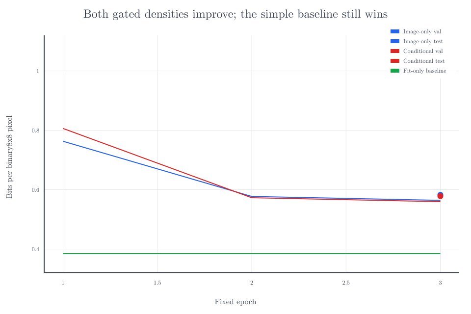
Verify strict causality and the opened blind spot separately
Each variant differentiates all64 logits with respect to all64 raw input sites. Every current/future entry k>=j is exactly zero. Each site also flips all current and future bits simultaneously and requires every conditional through j to remain bit identical. These128 finite-change guards complement8192 Jacobian entries; a zero local derivative alone could hide a ReLU or saturation issue. Single-image predictions match the same image inside the full test batch.
The source blind-spot probe uses logit34(row4,col2) and input28(row3,col4). A plain masked PixelCNN cannot connect these sites; the gated vertical stream can. The source's plain comparison has its initial seed8401 weights, while the two gated comparisons use their fitted final weights. It is a dependency check, not a fitted-loss comparison or causal attribution to the digit label.
#include <dm/dm.hpp>
int main(){
namespace n=dm::nn;auto plot=dm::graphics::RPlot::create();
std::vector<n::Tensor> gradients;std::vector<std::string> names{"Plain initial","Gated image-only","Gated conditional"};
for(const std::string variant:{"unconditional","conditional"}){
std::map<std::string,n::Tensor> a;
for(auto& [key,value]:n::load_npz("build/gated_pixel_cnn/"+variant+"/blindspot.npz"))a.emplace(key,value);
if(variant=="unconditional")gradients.push_back(n::reshape(a.at("plain_input_gradient"),{64}));
gradients.push_back(n::reshape(a.at("gated_input_gradient"),{64}));
}
const std::vector<dm::graphics::RGB> colours{{100,116,139},{37,99,235},{220,38,38}};
auto all=n::stack(gradients);double lo=n::min(all).item(),hi=n::max(all).item(),range=hi-lo;
for(int k=0;k<3;++k){
auto values=gradients[k].to_vector<double>();
plot.lines(n::arange(0,64).to_vector<double>(),values,names[k],colours[k]);
plot.points({28},{values[28]},"",colours[k],6);
}
plot.y_limits(lo-.15*range,hi+.6*range).x_label("Raw input raster site; markers show site28")
.y_label("Logit34 partial").title("The vertical link opens a previously unreachable past site")
.save_svg("build/gpc_blindspot.svg");
std::print("Input28 partial: plain={:.9f}, image-only={:.9f}, conditional={:.9f}.\n",gradients[0].to_vector<double>()[28],gradients[1].to_vector<double>()[28],gradients[2].to_vector<double>()[28]);
}Input28 partial: plain=0.000000000, image-only=-0.000844869, conditional=0.002056331.
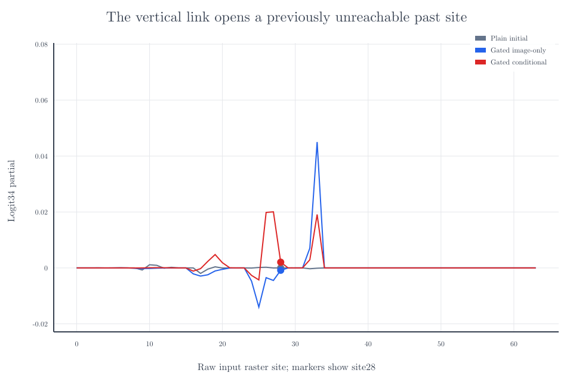
#include <dm/dm.hpp>
int main(){
namespace n=dm::nn;std::vector<n::Tensor> maps;
for(const std::string variant:{"unconditional","conditional"}){
n::Tensor j;for(auto& [key,value]:n::load_npz("build/gated_pixel_cnn/"+variant+"/causality.npz"))if(key=="jacobian")j=n::abs(value);
auto scaled=n::log1p(100*j);scaled=scaled/n::max(scaled);
maps.push_back(n::reshape(scaled,{64,64,1}));
}
n::save_image_grid(n::stack(maps),"build/gpc_causality.png",2,0,1,3,.5,4);
}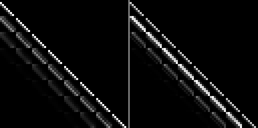
Show all samples and preserve every observed prefix
The final restored models generate32 samples each with seed8521, starting from all-zero canvases. The supplied sampling labels cycle0..9 for both variants; only the conditional model uses their values. Epoch snapshots also reuse8521 with16 rows, so comparisons use consistent random banks. The program repeats final samples and requires images, uniforms and retained conditionals to match bit for bit. Inference leaves every stored parameter unchanged.
#include <dm/dm.hpp>
int main(){
namespace n=dm::nn;std::vector<n::Tensor> images;
for(const std::string variant:{"unconditional","conditional"})
for(auto& [key,value]:n::load_npz("build/gated_pixel_cnn/"+variant+"/samples.npz"))if(key=="images")images.push_back(value);
n::save_image_grid(n::tile(n::concat(images,0),{1,1,1,3}),"build/gpc_samples.png",8,0,1,0,0,8);
}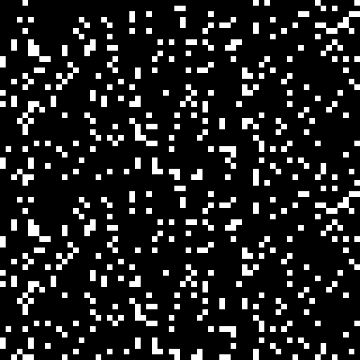
For completion, seed8527 supplies the same eight full random banks to both variants. The first32 raster sites are copied from the corresponding test image; only the remaining32 are sampled. Gray unknowns below are for display. The program never feeds those gray values or the unobserved truth to the sampler.
#include <dm/dm.hpp>
int main(){
namespace n=dm::nn;std::vector<n::Tensor> cases;
for(const std::string variant:{"unconditional","conditional"})
for(auto& [key,value]:n::load_npz("build/gated_pixel_cnn/"+variant+"/completion_gallery.npz"))if(key=="images")cases.push_back(n::reshape(value,{8,3,8,8,1}));
auto image=n::reshape(n::concat(cases,1),{48,8,8,1});
n::save_image_grid(n::tile(image,{1,1,1,3}),"build/gpc_completions.png",6,0,1,0,0,8);
}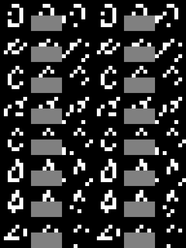
Hold the random streams fixed while changing the class
The class grid has ten rows, classes0..9, with four shared uniform streams per row. An unconditional model must repeat the same four images on every row: valid labels are ignored exactly. The conditional model may change its output when the class changes, but a visible difference alone does not establish that the generated image represents that class. The source includes every sample; there is no selection of readable digits.
#include <dm/dm.hpp>
int main(){
namespace n=dm::nn;std::vector<n::Tensor> groups;
for(const std::string variant:{"unconditional","conditional"})
for(auto& [key,value]:n::load_npz("build/gated_pixel_cnn/"+variant+"/class_grid.npz"))if(key=="images")groups.push_back(n::reshape(value,{10,4,8,8,1}));
auto image=n::reshape(n::concat(groups,1),{80,8,8,1});
n::save_image_grid(n::tile(image,{1,1,1,3}),"build/gpc_class_grid.png",8,0,1,0,0,8);
}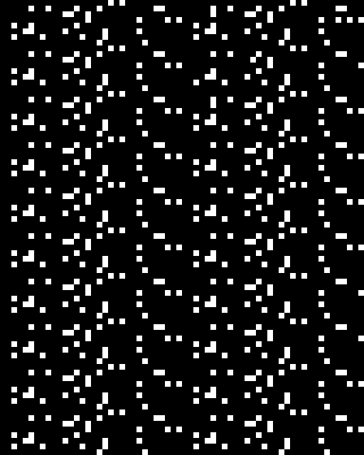
A second control keeps every test image fixed and shifts its supplied class from c to(c+1)mod10. Unconditional probabilities remain bit identical. The conditional model's maximum probability change over12800 sites is.0292038. The class-wise means below average absolute changes within each true-class pool; they measure sensitivity to this supplied label shift, not accuracy.
#include <dm/dm.hpp>
int main(){
namespace n=dm::nn;auto plot=dm::graphics::RPlot::create();int variant_index=0;
const std::vector<dm::graphics::RGB> colours{{37,99,235},{220,38,38}};
for(const std::string variant:{"unconditional","conditional"}){
std::map<std::string,n::Tensor> data,out,control;
for(auto& [key,value]:n::load_npz("build/gated_pixel_cnn/"+variant+"/data.npz"))data.emplace(key,value);
for(auto& [key,value]:n::load_npz("build/gated_pixel_cnn/"+variant+"/outputs.npz"))out.emplace(key,value);
for(auto& [key,value]:n::load_npz("build/gated_pixel_cnn/"+variant+"/class_controls.npz"))control.emplace(key,value);
auto delta=n::mean(n::abs(n::cast(control.at("probability"),n::DType::Float64)-n::cast(out.at("probability"),n::DType::Float64)),{1,2,3});
auto labels=data.at("test_labels").to_vector<std::int32_t>();std::vector<double> means;
for(int c=0;c<10;++c){std::vector<std::int64_t> rows;for(int i=0;i<200;++i)if(labels[i]==c)rows.push_back(i);means.push_back(n::mean(n::take_rows(delta,rows)).item());}
plot.lines(n::arange(0,10).to_vector<double>(),means,variant_index?"Conditional":"Image-only",colours[variant_index]);++variant_index;
}
plot.y_limits(-.0005,.026).x_label("Original test digit class").y_label("Mean absolute probability change")
.title("Changing the supplied class affects only the conditional model").save_svg("build/gpc_class_effect.svg");
}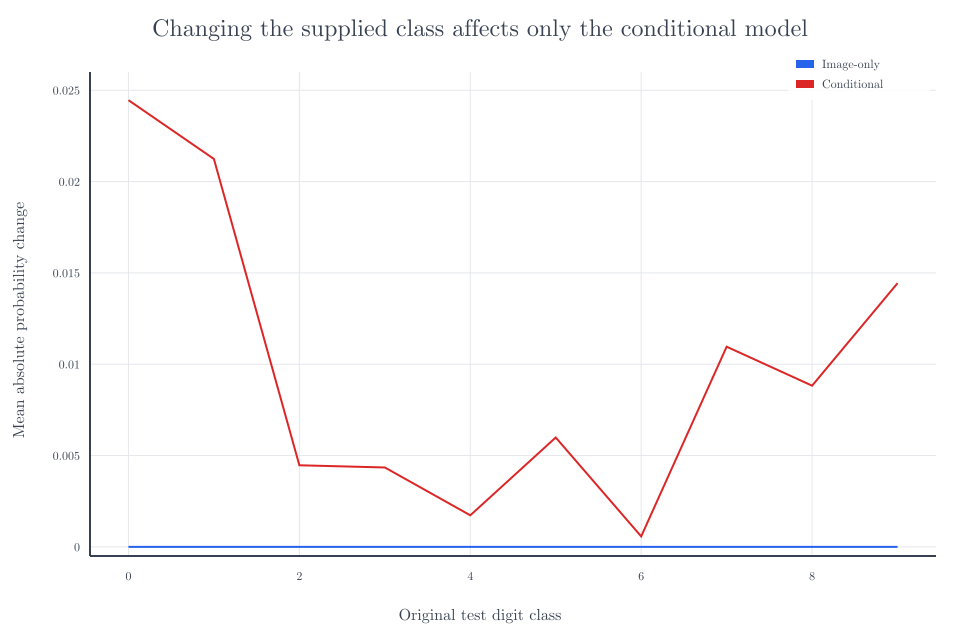
Keep numerical fidelity separate from generative quality
Both final checkpoints restore every named leaf exactly. A separate development NumPy oracle checks553830 forward values,257348 analytic partials,152 scalar finite differences, all192 Adam writes, all6000 fitting-row visits,8192 input Jacobian entries,128 future-flip guards and15872 sampled pixels. It verifies complete uniform-bank layout, prefix preservation, shared four-stream class controls, unconditional label invariance and both blind-spot probes. The report must reproduce all50 original archives/3231050 values and576 phase captures before the old executable is retired. Source checks do not require TensorFlow or a different checkout at runtime.
The result is a faithful, small experiment in gated causal image densities. Both gated models retain a worse fixed-final likelihood than the fit-only baseline. Their slight difference in held-out loss does not isolate class conditioning from parameter count or initialization. The class controls verify that a supplied label has an effect only when enabled; neither that effect nor the samples establish classification accuracy, perceptual realism or full-paper PixelCNN performance.